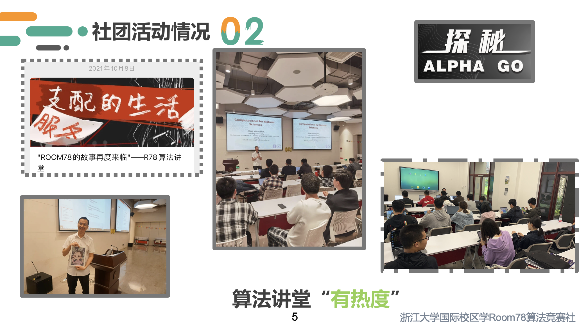
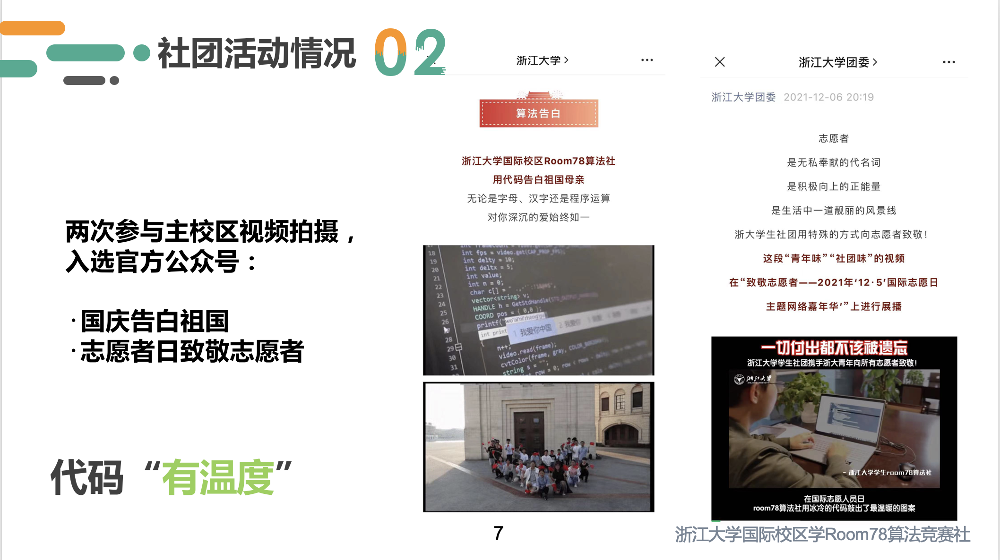
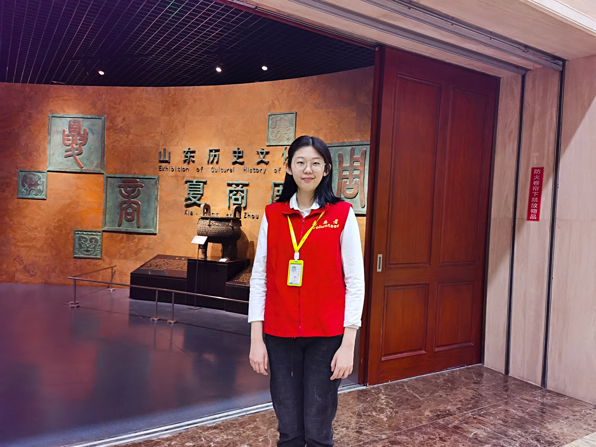

智能机器平台-计算机科学与技术
天津大学 未来技术学院
Hosted on GitHub Pages — Theme by orderedlist
I founded Room78 Algorithm Club as one of the co-founders in 2020 at Haining Campus, ZJU. Until Septem 2022, I served as the president of Room78. We have own open judge, which is used for daily teaching and practice, as well as for small simulation competitions. Room78 holds workshops on research and competition experience sharing, as well as algorithm lectures like "Our Life Dominated by Algorithms" for all students in Haining campus.

Room78 has participated in two festive videos of Zhejiang University in 2021: the National Day with code to confess our country, and the Volunteer Day with code to pay tribute to volunteers.

In 2015, I joined the Shandong Museum Volunteer Docent Team. I have accumulated more than 300 hours of volunteer service. After leaving my hometown for college, I still use my summer and winter time for volunteer work.

One of my hobbies is to create videos that are both aesthetically and socially meaningful. Here are some of my works.
Social Research on the Natural Environment